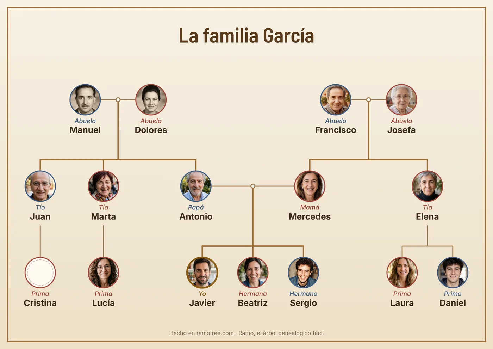

Cómo hacer un árbol genealógico paso a paso
Hacer el árbol de tu familia es más fácil de lo que parece: empieza por lo que ya sabes, pregunta a los mayores mientras puedas y ve completándolo poco a poco. Aquí tienes los pasos y una plantilla gratis para imprimir.
¿Quieres empezar ya? Crea tu árbol aquí mismo: pon a tus abuelos, padres, tíos, primos y hermanos, con fotos si quieres, y descárgalo en PDF o como imagen.

1. Empieza por ti
Apunta tu nombre, cuándo y dónde naciste. Después, tus padres y tus hermanos, y luego tus abuelos. Escribe todo lo que sepas de memoria, aunque esté incompleto: una fecha aproximada («hacia 1930») vale más que un hueco.
2. Pregunta a la familia
Los mayores son la mejor fuente, y lo que no se pregunta a tiempo se pierde. Algunas preguntas que funcionan:
- ¿Cómo se llamaban tus padres y tus abuelos, con los dos apellidos?
- ¿Dónde y cuándo nacieron? ¿Con quién se casaron, y dónde?
- ¿Cuántos hermanos tenían? ¿Qué fue de ellos?
- ¿A qué se dedicaban? ¿Dónde vivían?
- ¿Guardas fotos, cartas o recordatorios de esa época?
Lleva el álbum de fotos: las caras ayudan a recordar. Haz fotos con el móvil a las fotos antiguas y, si te dejan, graba la conversación.
3. Busca los datos que faltan
En casa suele haber más de lo que parece: el libro de familia, partidas de nacimiento o de bautismo, recordatorios, esquelas y fotos con algo escrito detrás. Fuera de casa, el Registro Civil tiene los nacimientos, matrimonios y defunciones desde 1871, y para antes están los archivos parroquiales. En FamilySearch, que es gratis, hay millones de registros antiguos ya escaneados.
Anota de dónde sale cada dato. Cuando dos fuentes no coinciden, sabrás de cuál fiarte.
4. Ordénalo: en papel o en el móvil
Un árbol en papel está muy bien para empezar. Pero el árbol crece rápido (hermanos, tíos, primos, parejas…) y el papel se queda pequeño. Con Ramo añades a cada familiar tocando su tarjeta, y la app lo coloca todo sola, con fotos, fechas aproximadas y el parentesco de cada uno. No hace falta cuenta, y si ya tienes un árbol de otro programa, Ramo abre los archivos GEDCOM.
5. Compártelo con la familia
Manda el árbol en PDF al grupo de la familia: cada uno puede completar su rama con Ramo, gratis, y devolvértelo, y Ramo junta las versiones sin repetir a nadie. Cuando esté completo, imprímelo en grande o regálalo enmarcado.
Más guías